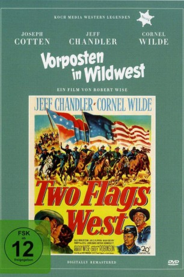

#8655 Vorposten in Wildwest
Alternativ: Two Flags West
 
 IMDB-Wertung: 6.7 / 10
IMDB-Wertung: 6.7 / 10  Metascore: 0
Metascore: 0 
Um dem Gefangenenlager zu entkommen, erklärt sich ein Trupp von Südstaatlern um Colonel Clay Tucker im Herbst 1864 bereit, einen dezimierten Nordstaatentrupp bei seine Kampf gegen die Indianer zu unterstützen. Befehligt werden jene vom rassistischen Major Kenniston, dessen Mord an eine Häuptlingssohn in eine spektakulär realisierte Indianerattacke auf das Fort mündet.
Jahr: 1950
Dauer: 92 Minuten
FSK: 12
Land: USA Studio: Twentieth Century FoxTonspuren:
Untertitel: Deutsch,
Auflösung: 1080p (1488x1080) Größe: 6717 MB
Genre: Drama, Krieg, Western, Liebe
Regisseur:  Robert Wise
Robert Wise
Drehbuch: Curtis Kenyon
Soundtrack: Hugo Friedhofer
Darsteller:
 Joseph Cotten als Col. Clay Tucker
Joseph Cotten als Col. Clay Tucker- Linda Darnell als Elena Kenniston
- Jeff Chandler als Maj. Henry Kenniston
- Cornel Wilde als Capt. Mark Bradford
- Dale Robertson als Lem
 Jay C. Flippen als Sgt. Terrance Duey
Jay C. Flippen als Sgt. Terrance Duey Noah Beery Jr. als Cy Davis
Noah Beery Jr. als Cy Davis- Harry von Zell als Ephraim Strong
- Johnny Sands als Lt. Adams
 Arthur Hunnicutt als Sgt. Pickens
Arthur Hunnicutt als Sgt. Pickens Robert Adler als Hank (uncredited)
Robert Adler als Hank (uncredited) Stanley Andrews als Col. Hoffman (uncredited)
Stanley Andrews als Col. Hoffman (uncredited) Marjorie Bennett als Mrs. Simpkins (uncredited)
Marjorie Bennett als Mrs. Simpkins (uncredited) Chet Brandenburg als Confederate Soldier (uncredited)
Chet Brandenburg als Confederate Soldier (uncredited) Ralph Bucko als Confederate Soldier (uncredited)
Ralph Bucko als Confederate Soldier (uncredited) Donald Curtis als (uncredited)
Donald Curtis als (uncredited)- Don Garner als Ash Cooper (uncredited)
- Ray Jones als Confederate Soldier (uncredited)
- Ferris Taylor als Dr. Magowan (uncredited)
- Jose Baca als (uncredited)
- Bertha Brennan als (uncredited)
- Bill Burch als (uncredited)
 Harry Carter als Lt. Reynolds (uncredited)
Harry Carter als Lt. Reynolds (uncredited)- Aurora Castillón als Maria (uncredited)
- Fabian Chevez Jr. als (uncredited)
- Allen Church als (uncredited)
- Sally Corner als Mrs. Magowan (uncredited)
- Don Cox als (uncredited)
- Hilliard Crown als (uncredited)
- William H. Doyle Jr. als (uncredited)
- Joseph Droegel als (uncredited)
- Everett Glass als Rev. Simpkins (uncredited)
- Roy Gordon als Capt. Stanley (uncredited)
- Fred Holm als (uncredited)
- Charity Holt als (uncredited)
- George K. Hundley als (uncredited)
- Jack Lee als Courier (uncredited)
- Lee MacGregor als Cal (uncredited)
- William McCarter als (uncredited)
- Don Nevitt als (uncredited)
- Ferguson Pollycutt als (uncredited)
- Hank Potts als (uncredited)
- Ed Pulliam als (uncredited)
- Jimmy Spencer als Indian (uncredited)
- Sam Tafoya als (uncredited)
- Brinton Turkles als (uncredited)
Datei: X:\HD-Western-1900-1959\Vorposten in Wildwest (1950, FSK12, 1488x1080).mkv seit 13.04.2018
Festplatte: HD Eastern+Western
 Es gibt insgesamt 98 Filme in der Gruppe 'HD-Western-1900-1959'
Es gibt insgesamt 98 Filme in der Gruppe 'HD-Western-1900-1959'